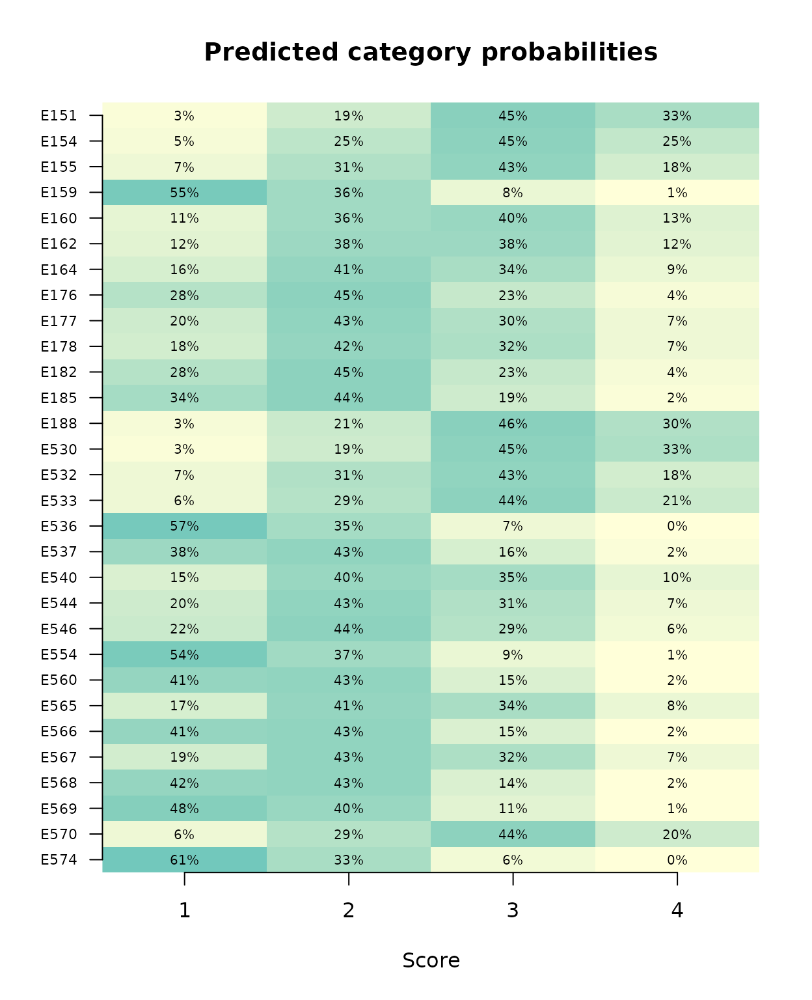
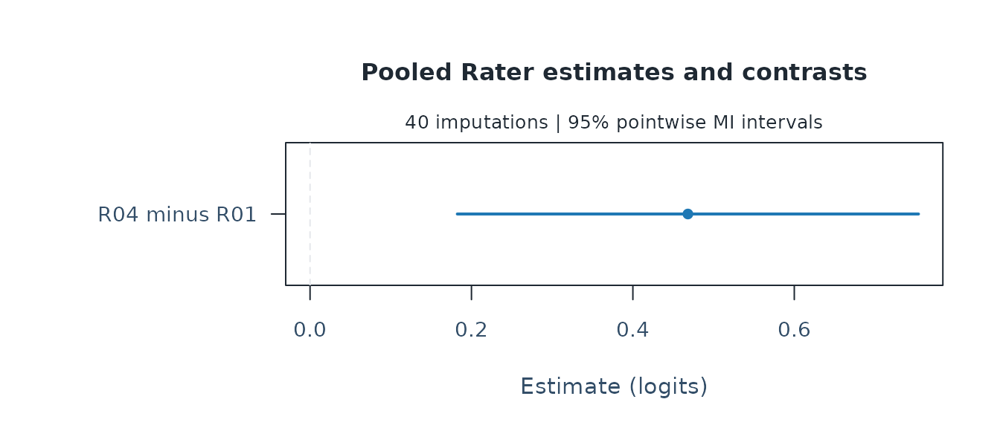

Missing scores on assigned ratings
Source:vignettes/mfrmr-response-imputation.Rmd
mfrmr-response-imputation.RmdAn assessment team has missing scores from ratings that were assigned. It wants to compare two raters’ severity while allowing for uncertainty about those scores. Other performances were never assigned to one rater. Those unassigned combinations are part of the design, not scores to invent.
This example uses fictional assessment data, a specified joint rating-scale imputation model, separate MFRM analyses and a pooled rater difference. It compares the result with direct inference from observed scores and changes the missing-score assumption in a sensitivity analysis. The saved completions are supplied with the package, so the analysis runs without installing a Bayesian sampler. An accompanying R/Stan script regenerates them if required. These functions are available in version 0.2.4.
Keep assignment separate from missing scores
The original data have 48 persons, four raters and four criteria.
Every rating has an event ID. Six R04 Content events are unassigned.
Among the remaining R04 Content and Language events, scores are masked
with probability plogis(-0.5 + (2.5 - mean_R01_score)). All
R01 scores remain observed. The fixed random seed selects 30 missing
assigned scores; five persons have two missing scores each. Repeated
ratings would need different event IDs even if their person, rater and
criterion were identical.
This missingness mechanism depends only on observed scores and is MAR by construction. It illustrates ignorable missingness, not a test showing that missingness in a real assessment is MAR. Hidden scores are saved solely to check predictions; they are never supplied to the imputation model.
library(mfrmr)
example <- readRDS(system.file("examples", "response-imputation.rds", package = "mfrmr"))
ratings <- example$ratings
missing_assigned <- example$missing
unassigned <- example$unassigned
held_out_scores <- example$held_out
impute_ids <- ratings$Event[missing_assigned]
m <- ncol(example$scores)
model <- example$imputation_model
with(ratings, table(Assigned, MissingScore = is.na(Score)))
#> MissingScore
#> Assigned FALSE TRUE
#> FALSE 0 6
#> TRUE 732 30Absent roster rows remain absent. If the input contains assigned
events only, omit the assigned argument. To deliberately
exclude other assigned nonresponse from imputation, retain it as missing
and explicitly request missing = "omit". Review omission
counts and their substantive consequences; exclusion can still bias an
analysis.
Use a joint score model
Within each completion, the imputation model draws:
- One joint set of rater severities, criterion difficulties and shared steps, allowing for their posterior uncertainty and covariance.
- One latent ability for each person, informed by that person’s observed ratings. All missing ratings of that person share this ability draw.
- A category for each selected missing rating, conditional on those draws.
This retains uncertainty in both calibration and missing scores, as well as dependence between missing ratings. Plugging in an EAP or drawing a separate ability independently for each missing rating would be a different procedure. Observed scores and unassigned events never change.
For a category coded internally as , the model is
Persons are independent draws from a known standard-normal
population. The rater, criterion and step vectors each sum to
zero, matching the default completed-data analysis below. The model is
an adjacent-category RSM; its steps are not required to be ordered
cumulative-logit cutpoints. Orthonormal sum-zero coordinates for
calibration have independent normal(0, 2.5) priors (2.5 is
the SD). This gives a proper, level-symmetric prior on each centered
vector. It does not turn the fixed raters into a population of
exchangeable random-rater effects with an estimated variance.
These are assumptions of this example, not automatic defaults for arbitrary assessments. Review the population distribution, category model and dependence structure. Covariates or additional effects can be needed when nonresponse relates to information outside this model. Several tasks, shared random raters or local dependence may require a different joint imputation model.
Inspect sampling and preserve provenance
The saved result contains 40 completions selected at random without replacement from 8,000 retained draws in four well-mixing chains. The generation script requires Rhat below 1.01, bulk/tail effective sample sizes of at least 400, no divergences or maximum-tree-depth hits and E-BFMI of at least 0.3. It saves all chains before reviewing these diagnostics and stops if they fail.
diagnostics <- model$diagnostics
c(MaxRhat = max(diagnostics$rhat),
MinBulkESS = min(diagnostics$ess_bulk),
MinTailESS = min(diagnostics$ess_tail))
#> MaxRhat MinBulkESS MinTailESS
#> 1.002811 9025.726605 4972.014080
model$sampler
#> $num_divergent
#> [1] 0 0 0 0
#>
#> $num_max_treedepth
#> [1] 0 0 0 0
#>
#> $ebfmi
#> [1] 1.0442916 0.9949950 1.0686320 0.9671717
head(model$draw_ids)
#> .chain .iteration .draw
#> 4138 3 138 4138
#> 7876 4 1876 7876
#> 7793 4 1793 7793
#> 3642 2 1642 3642
#> 3362 2 1362 3362
#> 2766 2 766 2766Good sampling diagnostics do not prove that the response model describes the assessment. Random selection approximates independent posterior draws here; it cannot repair a poorly mixing chain. Forty completions are an example setting: examine Monte Carlo error relative to the decision’s required precision. More completions reduce simulation noise, not model bias.
To regenerate the example, use the accompanying script with an existing CmdStanR/Stan installation. This optional step compiles and samples the model; importing the supplied completions and running the analyses below does not require that toolchain. The script is specific to this example, not a general imputation API.
source(system.file("examples", "response-imputation.R", package = "mfrmr"))
example <- response_imputation_example("mi-example-output")The output directory retains the model code, data, sampler settings, all chains and diagnostics. Use a new directory for a new run. Draw identities, selected scores and model specification are also retained in the compact example file. The full chains can be used for further posterior checks.
Return completions to the original roster
Only eligible event IDs receive scores. A long-format
mids object from another suitable imputation model can
instead be supplied directly; the API checks its original data and
where mask. Common category labels or a successful import
do not establish compatibility with the analysis model.
completed <- lapply(seq_len(m), function(i) {
result <- ratings
result$Score[missing_assigned] <- example$scores[, i]
result
})
review <- mfrm_response_imputations(
ratings, completed, person = "Person", facets = c("Rater", "Criterion"),
score = "Score", event_id = "Event", impute = impute_ids, categories = 1:4,
assigned = "Assigned", imputation_model = model
)
review
#> Multiple imputations of assigned rating scores
#> 40 imputations; 30 selected missing scores; 6 unassigned rows; 0 omitted assigned rows
#> Review the imputation model and original observed support before analysis.
subset(summary(review), Facet == "Rater")
#> Facet Level Assigned Observed Imputed Omitted
#> 49 Rater R01 192 192 0 0
#> 50 Rater R02 192 192 0 0
#> 51 Rater R03 192 192 0 0
#> 52 Rater R04 186 156 30 0
stopifnot(all(vapply(review$completed, function(d) {
all(is.na(d$Score[unassigned])) &&
identical(d$Score[!is.na(ratings$Score)], ratings$Score[!is.na(ratings$Score)])
}, logical(1))))The support table separates observed and imputed information. A person or rater with no observed scores depends especially strongly on the imputation assumptions. Imputed links are not evidence of empirical overlap. All selected scores must be completed in every imputation; no invalid completion is dropped.
Check the missing-score predictions
The saved category probabilities average all 8,000 posterior draws. They are more precise simulation summaries than the category frequencies from just 40 completions. Labels show percentages as well as color, so the figure can be read without distinguishing colors. Each row is a marginal prediction; dependence between rows is preserved in the joint completions.
probabilities <- example$probability_mean
n <- nrow(probabilities)
image(1:4, seq_len(n), t(probabilities[n:1, , drop = FALSE]),
zlim = c(0, 1), col = colorRampPalette(c("#ffffd9", "#7fcdbb", "#41b6c4"))(64), axes = FALSE,
xlab = "Score", ylab = "", main = "Predicted category probabilities")
axis(1, at = 1:4)
axis(2, at = seq_len(n), labels = rev(impute_ids), las = 1, cex.axis = .7)
for (j in 1:4) text(j, seq_len(n),
labels = sprintf("%.0f%%", probabilities[n:1, j] * 100), cex = .65,
col = "black")
Rounded zero percentages do not mean impossible categories. In addition to sampling diagnostics, examine whether predictions describe the assessment. Because we deliberately masked scores, we can compare the predictions with held-out values. The Brier score compares probabilities with the observed category; smaller is better.
prediction_check <- data.frame(
Event = impute_ids, HeldOutScore = held_out_scores,
PredictedMean = drop(probabilities %*% (1:4)),
Brier = rowSums((probabilities - outer(held_out_scores, 1:4, "=="))^2)
)
head(prediction_check)
#> Event HeldOutScore PredictedMean Brier
#> 1 E151 3 3.086315 0.4445240
#> 2 E154 4 2.904553 0.8348223
#> 3 E155 3 2.727789 0.4566127
#> 4 E159 1 1.545423 0.3429264
#> 5 E160 2 2.555338 0.5949158
#> 6 E162 3 2.492109 0.5550627
c(HeldOutMean = mean(held_out_scores),
PredictedMean = mean(prediction_check$PredictedMean),
Brier = mean(prediction_check$Brier))
#> HeldOutMean PredictedMean Brier
#> 2.1000000 2.2417378 0.6125345The held-out mean is 2.10 and the predicted mean about 2.24. This small check makes prediction discrepancies visible, but cannot establish population bias, probability calibration or coverage of a rater interval. The RSM’s population and dependence assumptions still require substantive review.
Analyze every completion on the same scale
The declared 1–4 category ladder and identical facet constraints are
retained in every fit. This workflow currently supports
fixed-standard-normal RSM/PCM MML analysis. PCM requires
step_facet = "Criterion" explicitly. Shared anchors can be
supplied, but are treated as known: their uncertainty is not
included.
analyses <- fit_mfrm_imputed(review, model = "RSM", quad_points = 61)
summary(analyses)[, c("Imputation", "Status", "Error", "Warnings")]
#> Imputation Status Error Warnings
#> 1 1 eligible
#> 2 2 eligible
#> 3 3 eligible
#> 4 4 eligible
#> 5 5 eligible
#> 6 6 eligible
#> 7 7 eligible
#> 8 8 eligible
#> 9 9 eligible
#> 10 10 eligible
#> 11 11 eligible
#> 12 12 eligible
#> 13 13 eligible
#> 14 14 eligible
#> 15 15 eligible
#> 16 16 eligible
#> 17 17 eligible
#> 18 18 eligible
#> 19 19 eligible
#> 20 20 eligible
#> 21 21 eligible
#> 22 22 eligible
#> 23 23 eligible
#> 24 24 eligible
#> 25 25 eligible
#> 26 26 eligible
#> 27 27 eligible
#> 28 28 eligible
#> 29 29 eligible
#> 30 30 eligible
#> 31 31 eligible
#> 32 32 eligible
#> 33 33 eligible
#> 34 34 eligible
#> 35 35 eligible
#> 36 36 eligible
#> 37 37 eligible
#> 38 38 eligible
#> 39 39 eligible
#> 40 40 eligibleBefore interpretation, review model fit, observed support and
quadrature sensitivity using the retained fits. The default quadrature
grid is a starting point, not an adequacy certificate. A fit can
complete computation and still be ineligible for inference.
analysis_summary retains errors and warnings; pooling
requires every fit to be eligible and to have unregularized observed
information. Increasing the number of imputations does not cure a flawed
imputation model or a failed measurement analysis.
Pool the rater contrast, including its covariance
For feedback, a prespecified difference is often more interpretable than an isolated centered severity. Here a positive R04-minus-R01 value means that R04 is more severe under the default facet orientation. Differences are on the common logit scale. The covariance between the two rater estimates contributes to their difference’s variance in every completed analysis.
levels <- analyses$fits[[1]]$config$facet_specs$Rater$levels
contrast <- matrix(0, 1, length(levels),
dimnames = list("R04 minus R01", levels))
contrast[1, c("R04", "R01")] <- c(1, -1)
pooled <- pool_mfrm_imputed(analyses, facet = "Rater", contrasts = contrast)
summary(pooled)
#> Target Estimate SE Lower Upper DF WithinVariance
#> 1 R04 minus R01 0.4681867 0.1457127 0.1824438 0.7539296 2284.941 0.01845829
#> BetweenVariance TotalVariance MissingVarianceFraction MonteCarloSE Status
#> 1 0.002706235 0.02123218 0.1306456 0.008225319 pooled
plot(pooled)
Estimate averages the completed-data estimates.
WithinVariance averages their model-based variances;
BetweenVariance captures their variation across
imputations. TotalVariance includes both, with the
finite-imputation factor 1 + 1/m. SE and the
pointwise t interval use that total. MonteCarloSE instead
quantifies simulation error in the pooled point estimate.
MissingVarianceFraction is not the percentage of missing
scores.
The default df_complete = Inf uses large-sample
complete-data inference. There is no automatic conversion of rating-row
counts into independent sample size. A finite df_complete
is available when the target has a justified complete-data
degrees-of-freedom approximation; it does not create one. Fixed
constraints are reported as fixed, without confidence intervals.
These are model-based MI intervals, treating any supplied anchors as known. They do not guarantee finite-sample coverage, robustness to misspecification, or simultaneous control over a selected collection of rater flags. A severity difference is not a measure of rater quality. Feedback should use content, observed behavior and practical importance along with the uncertainty.
Person EAPs and posterior SDs remain in the separate fitted objects. They are not ordinary parameter estimates and standard errors for the pooling operation above. Neither averaged imputed scores nor Rubin-pooled EAPs substitute for an appropriately specified person-scoring target.
Compare with inference from the observed scores
If only scores are missing, the observed-score likelihood can already estimate this contrast under the same RSM and ignorable missingness assumptions. Multiple imputation does not add observed information. It is useful when completed rosters are needed for a downstream analysis or an explicit missing-score sensitivity assumption. For this single contrast, direct observed-score MML is a simpler starting point.
Keep the full roster and its missingness review. Here we explicitly
select its 732 observed assigned scores after the known masking
procedure. This selection is justified by the example’s construction; it
is not a remedy for unreviewed nonresponse, missing identifiers or a
disconnected design. Passing the roster with NA scores
directly to fit_mfrm() retains an input-review state, which
the interval helper will ask you to resolve.
observed_ratings <- subset(ratings, Assigned & !is.na(Score))
observed_fit <- fit_mfrm(observed_ratings, "Person", c("Rater", "Criterion"),
"Score", model = "RSM", method = "MML", rating_min = 1, rating_max = 4,
quad_points = 121, keep_original = TRUE, attach_diagnostics = FALSE)
observed_interval <- mfrm_facet_intervals(observed_fit, "Rater", contrasts = contrast)
comparison <- rbind(
data.frame(Method = "Observed-score MML",
summary(observed_interval)[c("Estimate", "SE", "Lower", "Upper")]),
example$reference,
data.frame(Method = "Joint-model MI",
summary(pooled)[c("Estimate", "SE", "Lower", "Upper")])
)
comparison
#> Method Estimate SE Lower Upper
#> 1 Observed-score MML 0.4630064 0.1430251 0.1826823 0.7433304
#> 2 Observed-score Bayes 0.4643634 0.1411058 0.1842984 0.7433944
#> 3 Joint-model MI 0.4681867 0.1457127 0.1824438 0.7539296The saved Bayesian reference comes from the same observed-score
posterior used for imputation. Its SE column is a
posterior SD, and its bounds are an equal-tailed
credible interval; the other rows use frequentist interval
approximations. In this example, the three estimates are about 0.46–0.47
logits with uncertainty scales about 0.14–0.15 logits. The MI estimate’s
Monte Carlo SE is about 0.008 logits. Increasing from 61 to 121
quadrature points changes the direct MML estimate by less than 0.000002
logits.
This agreement is reassuring for this calculation, but does not prove congeniality or repeated-sampling coverage. The imputer has proper calibration priors; the completed-data analyses use MML estimates and inverse observed information without those priors. Treating the latter as Bayesian posterior moments is a large-sample approximation. Prior influence, sparse support and model misspecification can make that approximation inadequate. Merely sharing the response likelihood is insufficient; see Bartlett and Hughes (2020).
What repeated sampling showed
A separate simulation examined this joint-RSM completion workflow for a fixed rater contrast. It used 200 independent datasets, each with 80 persons, three raters, two criteria and scores 0–2. Twenty ratings were structurally unassigned. Missing scores were concentrated in the third rater’s ratings; forty completions were used per incomplete roster. The true R1-minus-R3 contrast was 0.5 logits, and the known standard-normal ability distribution and RSM were correctly specified.
Each dataset was analyzed under two missingness mechanisms. In the MAR condition, missingness depended on the first rater’s observed scores. In the MNAR condition, it additionally depended on the missing rating’s own value, with lower scores more likely to be missing. Both conditions were analyzed using the same MAR imputer. This second condition deliberately violates the missingness assumption; it does not evaluate an MNAR imputation model.
| Missingness | Procedure | Available / 200 | Coverage, % (95% MC interval) | Mean bias, logits | Mean interval width, logits |
|---|---|---|---|---|---|
| MAR | Observed-score MML | 200 | 97.0 (93.6–98.9) | -0.007 | 0.813 |
| MAR | Observed-score Bayes | 198 | 97.0 (93.5–98.9) | -0.004 | 0.814 |
| MAR | Joint-model MI | 198 | 96.5 (92.9–98.6) | -0.004 | 0.817 |
| MNAR | Observed-score MML | 200 | 25.0 (19.2–31.6) | +0.574 | 0.859 |
| MNAR | Observed-score Bayes | 200 | 24.5 (18.7–31.1) | +0.578 | 0.859 |
| MNAR | Joint-model MI | 200 | 26.0 (20.1–32.7) | +0.574 | 0.864 |
Coverage is the fraction of available nominal 95% intervals containing the true contrast. The parentheses describe Monte Carlo uncertainty in that coverage rate, not an interval for a rater’s severity. The Bayesian row uses credible intervals. Two MAR posteriors missed the prespecified Rhat <1.01 criterion (1.0106 and 1.0104); their Bayesian and MI results were unavailable, and neither case was replaced. Counting these as unsuccessful results, MI returned an interval containing the truth in 191/200 trials (95.5%), compared with 191/198 (96.5%) among available intervals. All 15,920 completed-data MML fits from the retained posteriors were eligible.
In this MAR design, all three methods met the prespecified bounded coverage, availability and bias criteria. For MI, the bias MC interval was [-0.033, 0.025] logits. The mean point-estimate Monte Carlo SE was about 8% of the inferential SE. This supports this specific workflow under the tested assumptions, not a universal nominal-coverage guarantee, arbitrary supplied imputations or a validation of other populations, sparse designs or model families.
The two conditions had almost identical average missing fractions: 14.14% and 14.19% of assigned ratings. Nevertheless, the MNAR condition produced large positive bias and very poor coverage for all three methods. MI and direct inference can agree closely while both miss the target. Missingness concentrated in one rater also makes the overall missing fraction an insufficient description. More completions cannot correct the wrong missing-score distribution. Review the recording process, relevant auxiliary information and justified sensitivity assumptions before substantive feedback.
Challenge the missingness assumption
The baseline uses the same conditional score model for observed and missing assigned ratings, given the observed ratings and common latent ability. To examine a specific departure, suppose an unrecorded score would be one category lower than its baseline imputation, with the lowest category retained at 1. This is a deliberately strong, discrete pattern-mixture sensitivity scenario. It is not an estimated MNAR mechanism, a universal correction or an instruction to subtract a category from real ratings. Its size and direction need subject-matter justification in an actual assessment.
Use the same baseline draws to isolate this change. Only the selected scores change; observed and unassigned events stay as they were. Analyze and pool each assumption separately, rather than treating the assumptions as additional imputations of one model.
lower_scores <- lapply(completed, function(d) {
d$Score[missing_assigned] <- pmax(1L, d$Score[missing_assigned] - 1L)
d
})
lower_review <- mfrm_response_imputations(
ratings, lower_scores, person = "Person", facets = c("Rater", "Criterion"),
score = "Score", event_id = "Event", impute = impute_ids, categories = 1:4,
assigned = "Assigned", imputation_model = list(
baseline = model, assumption = "Missing scores one category lower, floored at 1")
)
lower_analyses <- fit_mfrm_imputed(lower_review, model = "RSM", quad_points = 61)
lower_pooled <- pool_mfrm_imputed(lower_analyses, facet = "Rater", contrasts = contrast)
comparison <- rbind(
cbind(Assumption = "Joint RSM baseline", summary(pooled)),
cbind(Assumption = "Missing scores one category lower", summary(lower_pooled))
)
comparison[, c("Assumption", "Estimate", "SE", "Lower", "Upper", "MonteCarloSE")]
#> Assumption Estimate SE Lower Upper
#> 1 Joint RSM baseline 0.4681867 0.1457127 0.1824438 0.7539296
#> 2 Missing scores one category lower 0.6674655 0.1409932 0.3910947 0.9438362
#> MonteCarloSE
#> 1 0.008225319
#> 2 0.005318215
paired_change <- drop(lower_pooled$estimates - pooled$estimates)
c(ContrastChange = mean(paired_change),
MonteCarloSEOfChange = sd(paired_change) / sqrt(m))
#> ContrastChange MonteCarloSEOfChange
#> 0.199278803 0.003517064Read the change in the rater contrast together with its uncertainty and your prespecified practically important difference. A modest change here would concern only this 30-event scenario; it would not establish robustness to other missing scores or mechanisms. A large change would identify dependence on the assumed missing scores, not prove which assumption is true. Inspect every analysis’s warnings and eligibility before interpreting either row. Neither an interval overlapping zero nor agreement between two scenarios validates the imputation model. The paired Monte Carlo SE quantifies simulation noise in the change between these two assumptions; it is not a sampling SE for that change.
Save enough to review and reproduce the result
saveRDS(pooled, "rater-imputation-result.rds")
saved <- readRDS("rater-imputation-result.rds")
summary(saved)
write.csv(summary(saved), "rater-imputation-table.csv", row.names = FALSE)
saved$analyses$imputations$imputation_model$diagnostics
saveRDS(list(baseline = pooled, lower_scores = lower_pooled),
"rater-imputation-sensitivity.rds")The saved result retains the original roster, completions, imputation
model, all fitted analyses and pooling settings. The CSV contains the
selected summary, so retain the RDS alongside it. Use
mfrmr_output_guide("imputation") for these dedicated output
routes; a pooled result is not an mfrm_results() input. Its
plot preserves the stored MI bounds. For custom graphics, extract
plot_data(saved)$table and specify the estimate and both
endpoints explicitly; as_ggplot() conversion is
unavailable, including with an explicit component. Changing the contrast
or confidence level reuses the fits; changing the imputation model
requires new completions and analyses. Saved objects contain response
data and identifiers: choose an appropriate storage location when using
real assessments.
References
- Andrich, D. (1978). A rating formulation for ordered response categories. Psychometrika, 43, 561–573. https://doi.org/10.1007/BF02293814.
- Rubin, D. B. (1987). Multiple Imputation for Nonresponse in Surveys. Wiley.
- Barnard, J., and Rubin, D. B. (1999). Small-sample degrees of freedom with multiple imputation. Biometrika, 86, 948–955. https://doi.org/10.1093/biomet/86.4.948.
- Bartlett, J. W., and Hughes, R. A. (2020). Bootstrap inference for multiple imputation under uncongeniality and misspecification. https://doi.org/10.1177/0962280220932189.
- Stan User’s Guide: posterior predictive sampling and missing data.